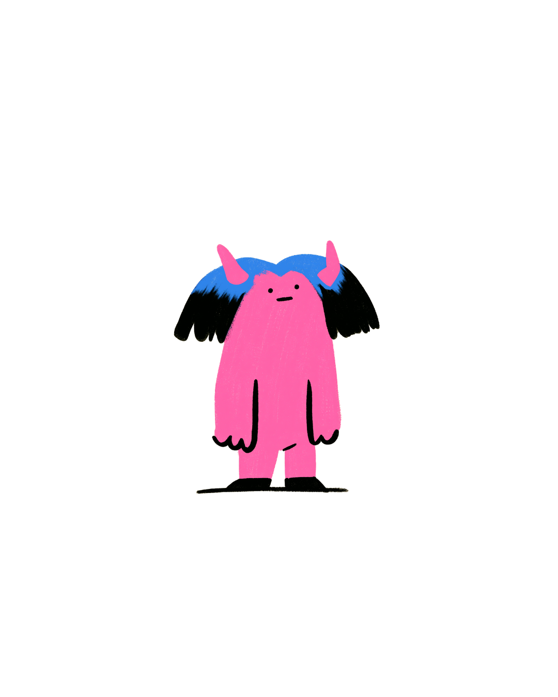
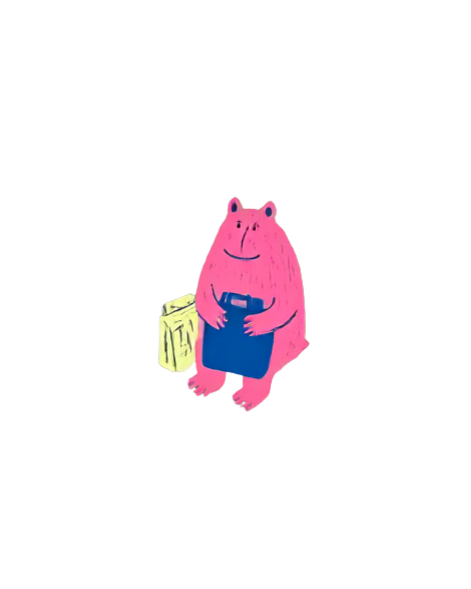
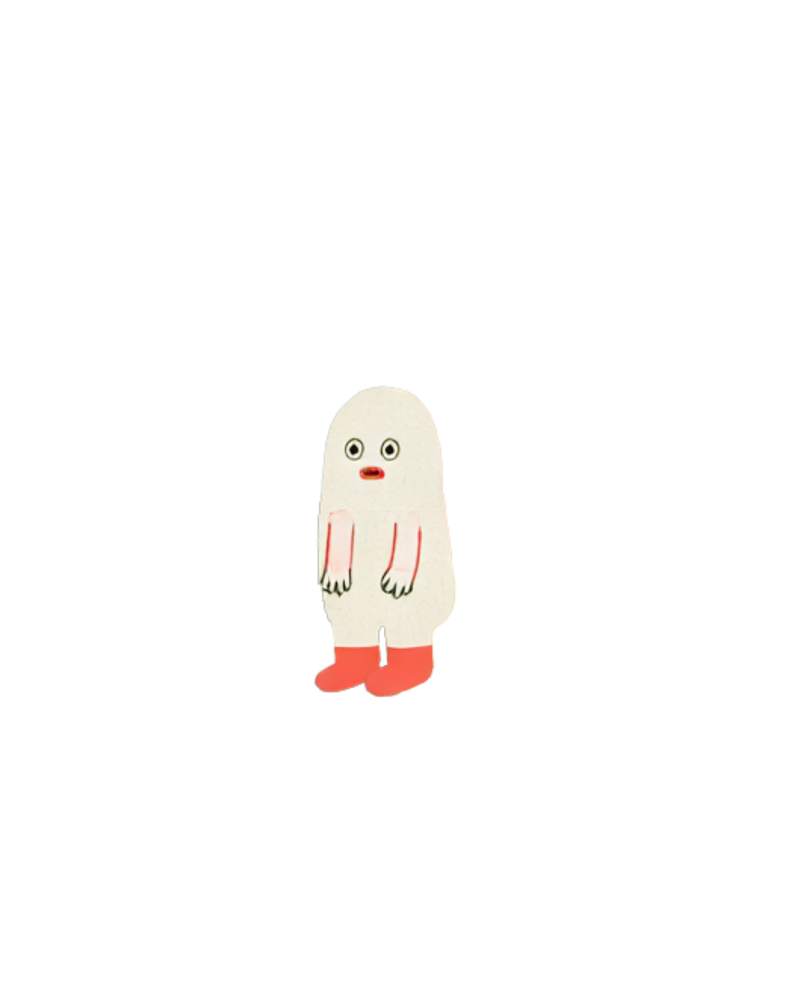
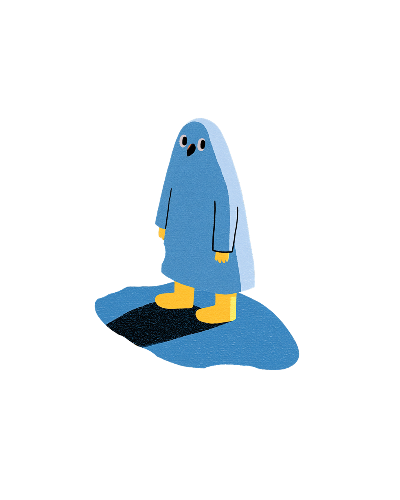

親密，沒有『對』的樣子。
有些人靠近時，很自然地感到放心
有些人靠近時，卻忍不住想確認，或想退開一下
有些人靠近時，卻忍不住想確認，或想退開一下
這不是為了替你貼上一個標籤
而是一張小小的地圖
陪你多認識一點自己現在習慣怎麼靠近一個人
而是一張小小的地圖
陪你多認識一點自己現在習慣怎麼靠近一個人




這不是一個「你有多依附」的總分，只是這兩個維度，在你今天的回答裡呈現出來的樣子
本測驗的概念，受到成人依附研究的啟發，包含 John Bowlby 的依附理論、Mary Ainsworth 的早期依附研究、Cindy Hazan 與 Phillip Shaver 將依附理論延伸至成人親密關係的研究、Kim Bartholomew 與 Leonard Horowitz 的四類依附模型，以及 Brennan、Clark 與 Shaver 發展的 ECR／ECR-R「依附焦慮 × 依附逃避」雙軸架構。
本測驗並非官方 ECR 量表，僅概念性參考上述研究，未經臨床或心理計量驗證。
喜歡我們的小測驗嗎？歡迎留下你的 email，成為首批會員，未來將優先獲得我們的新內容與服務！